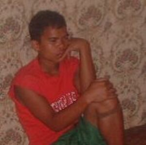

laggew 
/laggɔw/
v_rt.
“troubled”
vi.
for a person or animal (egkalaggew, nalaggew, laggew, agent, egkA><ø-) to be worried or sad (egkalaggawan, nalaggawi, patient, egkA><an-) about something (igkalaggew, ingkalaggawi, reason, ikA-)
Maa te egkalaggawan nu sikandin, te ka Manama egbantey ma kandin tagsè aldew?
God watches over him every day - why is it that you worry about him?
Amana egkalaggew si Maning ke egbaggiyu ka weyig.
Maning is going to be very sad if the river floods.
Iyan ku igkalaggew kandin su kenè nahud ne Kristuwanen sikandin.
The reason that I worry about him is that he is not a Christian.
Eng. sad; troubled; apprehensive; depressed; discouraged; gloomy; melancholic; sorrowful; downcast; distressed; upset
OCM: Drivers and Emotions (152)
DDP: Sad (3.4.2.1), Upset (3.4.2.1.6), Worried (3.4.2.4.1), Nervous (3.4.2.4.2)
Online dict status: -
Usage level: F
v.
for someone or something (egpakalaggew, nakalaggew, actor, egpAkA-) to be worried or sad about something (igpakalaggew, impakalaggew, theme, igpAkA-)
Egpakalaggew keddì ka peggipanew te me anak ku pehendiyè te Menila.
The trip of my children to Manila made me worried.
Igpakalaggew kandin seini ne me purublima.
This problem can make him sad.
Eng. tragic
OCM: Drivers and Emotions (152)
DDP: Sad (3.4.2.1), Worried (3.4.2.4.1)
Online dict status: -
Usage level: M
v.
for someone (eglaggew, miglaggew/inlaggew, agent, eg><ø-) to cause someone to worry about something (eglaggawen, inlaggew/miglaggew/piglaggew, patient, eg><en-) with something (iglaggew, inlaggew, theme, ig><ø-)
Eng. worry, to; sad, to
Online dict status: -
Usage level: R
n.
(kalaggew, kA-) sorrow
Eng. sorrow; sadness
Online dict status: -
Usage level: M
adj.
(lelaggawen, rdpCV–en) moody
Lelagawen ne etew si Ruli su minsan se deisek dè ka prublima rin amana e sikandin egpakalibeng-libeng.
Rolly was a melancholic person even with a simple problem he panic so much.
Eng. moody; melancholic
OCM: Personality Traits (157)
Online dict status: -
Usage level: R
Updated by: RJH,JLM,RJH,TME,RJH,QDL,RJH,NJK,NJK,QDL,RJH
Last updated: 26/Feb/2015
"Nalaggew" in healthbook "Mania teg pakapatey kag iindes?"
"nalaggew" in healthbook "Anak ni Biltu ne migkerid"
"nalaggew" in healthbook "Migsistu si Wini"
"Nalaggew" in healthbook "Miggendiye te huspital si Mirsi ka migtibi"
"egkalaggew" in healthbook "Miggendiye te huspital si Mirsi ka migtibi"
"pegkalaggew" in song "Diye te krus"
"kalaggew" in song "Ka keddiey ne umul"
"kalaggew" in song "Minsan egkaangken ku ka kalibutan"
This page last updated: 03-Jan-2020
Copyright © 2009-2014, Matigsalug Language Christian Association, Inc